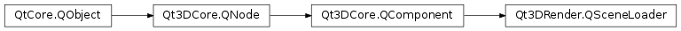

Qt3DRender.QSceneLoader¶
Synopsis¶
Functions¶
- def
component(entityName, componentType) - def
entity(entityName) - def
entityNames() - def
source() - def
status()
Signals¶
- def
sourceChanged(source) - def
statusChanged(status)
Detailed Description¶
Provides the facility to load an existing Scene
Given a 3D source file, the
Qt3DRender.QSceneLoaderwill try to parse it and build a tree ofQt3DCore.QEntityobjects with properQt3DRender.QGeometryRenderer,Qt3DCore.QTransformandQt3DRender.QMaterialcomponents.The loader will try to determine the best material to be used based on the properties of the model file. If you wish to use a custom material, you will have to traverse the tree and replace the default associated materials with yours.
As the name implies,
Qt3DRender.QSceneLoaderloads a complete scene subtree. If you wish to load a single piece of geometry, you should rather use theQt3DRender.QMeshinstead.
Qt3DRender.QSceneLoaderinternally relies on the use of plugins to support a wide variety of 3D file formats. Here is a list of formats that are supported by Qt3D.Note
this component shouldn’t be shared among several
Qt3DCore.QEntityinstances. Undefined behavior will result.See also
Qt3DRender.QMeshQt3DRender.QGeometryRenderer
-
class
PySide2.Qt3DRender.Qt3DRender.QSceneLoader([parent=nullptr])¶ Parameters: parent – PySide2.Qt3DCore.Qt3DCore::QNodeThe constructor creates an instance with the specified
parent.
-
PySide2.Qt3DRender.Qt3DRender.QSceneLoader.Status¶ This enum identifies the state of loading
Constant Description Qt3DRender.QSceneLoader.None The Qt3DRender.QSceneLoaderhasn’t been used yet.Qt3DRender.QSceneLoader.Loading The Qt3DRender.QSceneLoaderis currently loading the scene file.Qt3DRender.QSceneLoader.Ready The Qt3DRender.QSceneLoadersuccessfully loaded the scene file.Qt3DRender.QSceneLoader.Error The Qt3DRender.QSceneLoaderencountered an error while loading the scene file.
-
PySide2.Qt3DRender.Qt3DRender.QSceneLoader.ComponentType¶ This enum specifies a component type.
Constant Description Qt3DRender.QSceneLoader.UnknownComponent Unknown component type Qt3DRender.QSceneLoader.GeometryRendererComponent Qt3DRender.QGeometryRenderercomponentQt3DRender.QSceneLoader.TransformComponent Qt3DCore.QTransformcomponentQt3DRender.QSceneLoader.MaterialComponent Qt3DRender.QMaterialcomponentQt3DRender.QSceneLoader.LightComponent Qt3DRender.QAbstractLightcomponentQt3DRender.QSceneLoader.CameraLensComponent Qt3DRender.QCameraLenscomponent
-
PySide2.Qt3DRender.Qt3DRender.QSceneLoader.component(entityName, componentType)¶ Parameters: - entityName – unicode
- componentType –
PySide2.Qt3DRender.Qt3DRender::QSceneLoader.ComponentType
Return type: PySide2.Qt3DCore.Qt3DCore::QComponentReturns a component matching
componentTypeof a loaded entity with anPySide2.QtCore.QObject.objectName()matching theentityName. If the entity has multiple matching components, the first match in the component list of the entity is returned. If there is no match, a null pointer is returned.
-
PySide2.Qt3DRender.Qt3DRender.QSceneLoader.entity(entityName)¶ Parameters: entityName – unicode Return type: PySide2.Qt3DCore.Qt3DCore::QEntityReturns a loaded entity with an
objectNamematching theentityNameparameter. If multiple entities have the same name, it is undefined which one of them is returned, but it will always be the same one.
-
PySide2.Qt3DRender.Qt3DRender.QSceneLoader.entityNames()¶ Return type: list of strings Returns a list of the
objectNamesof the loaded entities.
-
PySide2.Qt3DRender.Qt3DRender.QSceneLoader.setSource(arg)¶ Parameters: arg – PySide2.QtCore.QUrlSee also
PySide2.Qt3DRender.Qt3DRender::QSceneLoader.source()
-
PySide2.Qt3DRender.Qt3DRender.QSceneLoader.setStatus(status)¶ Parameters: status – PySide2.Qt3DRender.Qt3DRender::QSceneLoader.StatusSee also
PySide2.Qt3DRender.Qt3DRender::QSceneLoader.status()
-
PySide2.Qt3DRender.Qt3DRender.QSceneLoader.source()¶ Return type: PySide2.QtCore.QUrlSee also
PySide2.Qt3DRender.Qt3DRender::QSceneLoader.setSource()
-
PySide2.Qt3DRender.Qt3DRender.QSceneLoader.sourceChanged(source)¶ Parameters: source – PySide2.QtCore.QUrl
-
PySide2.Qt3DRender.Qt3DRender.QSceneLoader.status()¶ Return type: PySide2.Qt3DRender.Qt3DRender::QSceneLoader.Status
-
PySide2.Qt3DRender.Qt3DRender.QSceneLoader.statusChanged(status)¶ Parameters: status – PySide2.Qt3DRender.Qt3DRender::QSceneLoader.Status
© 2018 The Qt Company Ltd. Documentation contributions included herein are the copyrights of their respective owners. The documentation provided herein is licensed under the terms of the GNU Free Documentation License version 1.3 as published by the Free Software Foundation. Qt and respective logos are trademarks of The Qt Company Ltd. in Finland and/or other countries worldwide. All other trademarks are property of their respective owners.